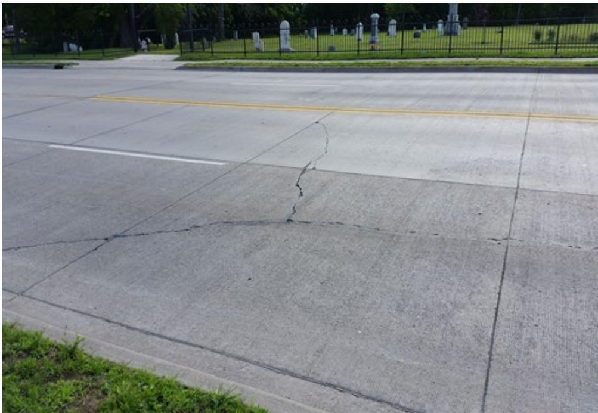
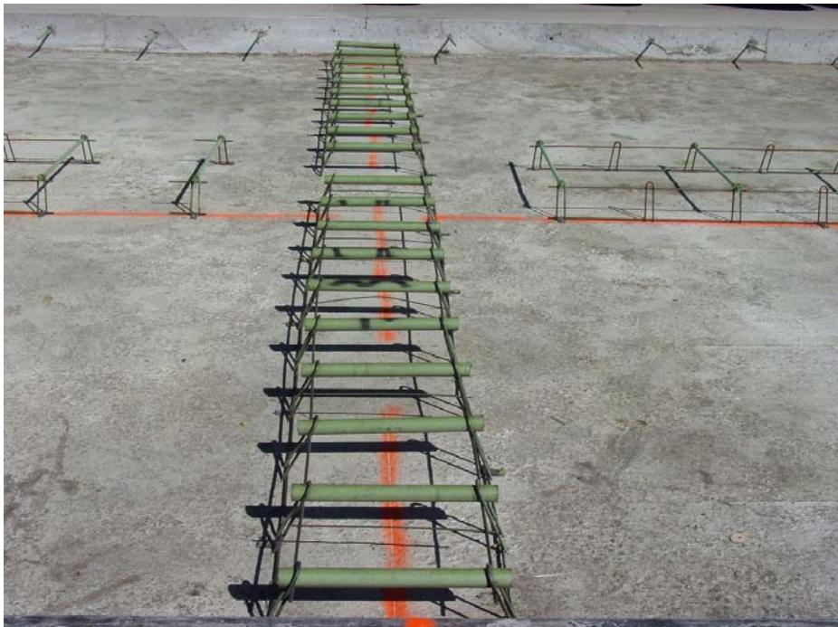
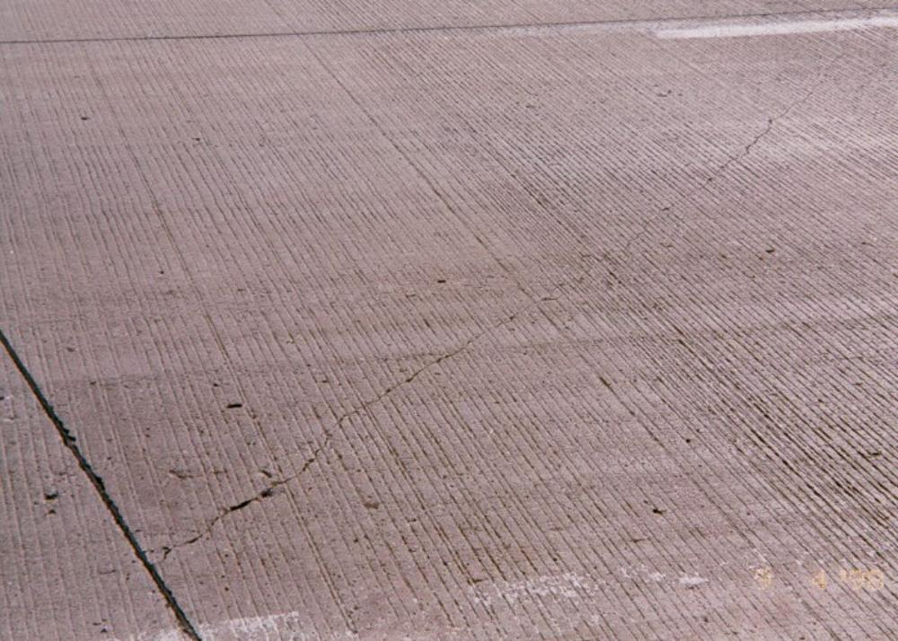
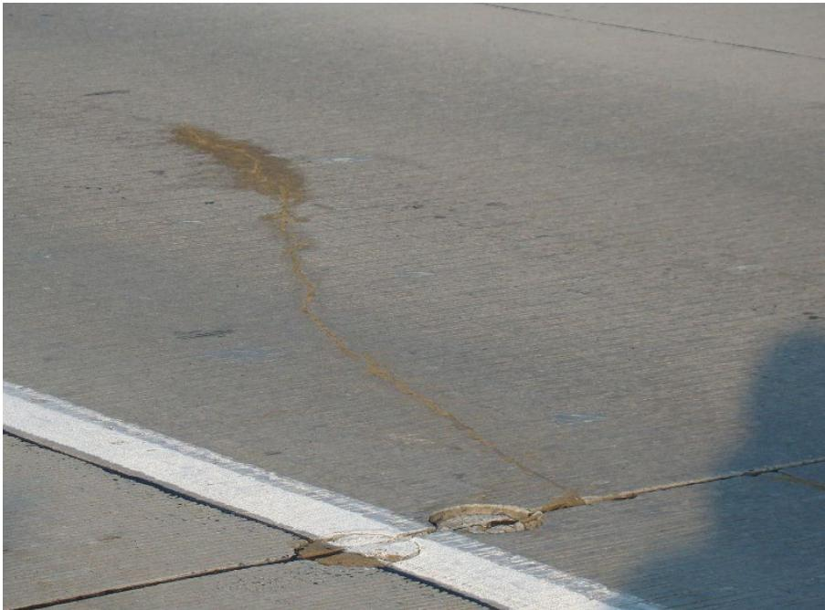

Transverse and Diagonal Cracking in Concrete Pavement Joints
Transverse and diagonal cracking in concrete pavement joints is a full‑depth structural distress that appears as working cracks which fault (vertical movement) or propagate across the slab, typically manifesting as mid‑panel fractures running either perpendicular or at an angle to the joint system [1][2]. These cracks develop when tensile stresses generated by early‑age volume changes, thermal curling, moisture warping, inadequate joint sawing, dowel misalignment, poor load transfer, non‑uniform base support, insufficient slab thickness, or repeated traffic loading exceed the concrete’s tensile strength, indicating that the slab–joint system cannot accommodate those stresses [1][2]. When faulting occurs, the cracks fragment slabs, reduce load‑transfer efficiency, compromise ride quality, and permit water and chemicals to infiltrate the pavement, accelerating durability problems and shortening service life; if the cracks remain closed they are generally non‑structural [1][2].
Sources (2)
Purpose and treatment objectives
Transverse and diagonal cracking in concrete pavement joints is a full‑depth structural distress manifested as working cracks that fault (vertical movement) or propagate across the slab. These cracks develop when tensile stresses—generated by early‑age volume changes, thermal curling, moisture warping, inadequate joint sawing, dowel misalignment, poor load transfer, non‑uniform base support, insufficient thickness, or repeated traffic loading—exceed the concrete’s tensile strength. The resulting faulted transverse cracks and oblique diagonal cracks fragment slabs, reduce load‑transfer efficiency, shorten service life, compromise ride quality, and permit water and chemicals to infiltrate the pavement, leading to durability problems. [1][2]
The figure below illustrates transverse cracking resulting from volumetric changes.

Transverse cracking in a concrete pavement slab caused by volumetric changes. [2]The image displays a concrete road surface featuring a prominent crack that propagates across the width of the lane, intersecting the longitudinal joint lines at an oblique angle.
[1] — Ch. 3 (p. 54), Ch. 6 (p. 181), Ch. 10 (p. 334); [2] — Ch. 4 (pp. 102–154), Ch. 5 (p. 31)
The guides state that the chief aim of providing transverse and diagonal joints in concrete pavement is to prevent deterioration of the slab—both by limiting uncontrolled cracking and by controlling crack location, reducing slab stresses, and ensuring effective load transfer. By anticipating where cracks will form, installing load‑transfer devices and sealing controlled joint cracks, ingress of aggressive fluids is limited, preserving ride quality and durability, which in turn extends the pavement’s service life. [1][2]
The following figure illustrates the placement of dowels at transverse joints.

Dowel bar baskets for a transverse joint and tie bar baskets for a longitudinal joint. [2]The image displays pre-fabricated dowel bar baskets consisting of green-coated steel bars held in alignment by wire ties, positioned on a concrete surface marked with orange layout lines. These assemblies are used to place dowel bars for load transfer between panels parallel to the pavement surface and to the longitudinal joint to enable free, uninhibited opening and closing of the joints.
[1] — Ch. 6 (p. 172); [2] — Ch. 4 (pp. 102–137)
Distress characterization and causes
The guides describe transverse and diagonal cracks occurring within jointed plain concrete pavement (JPCP) slabs, typically as mid‑panel fractures that run across the slab width or at an angle inside the joint system. Early‑age cracks can appear within the first 72 hours after placement, while fatigue‑type transverse cracks develop over several years under repeated truck loading. When the cracks remain closed they are not usually detrimental, but if faulting (vertical displacement) occurs the crack becomes a structural distress that produces a rough riding surface, increases dynamic loading and accelerates loss of slab life. The resulting functional impacts include reduced ride quality, ongoing maintenance requirements, and an elevated risk of slab failure. [1][2]
The figure below illustrates a diagonal crack in jointed plain concrete pavement.

Diagonal crack on JPCP [2]The image displays a concrete pavement surface characterized by longitudinal grooves and visible mid-panel fractures.
[1] — Ch. 3 (p. 54); [2] — Ch. 4 (pp. 103–104)
The underlying mechanisms driving transverse and diagonal cracking at concrete pavement joints are rooted in the inability of the slab–joint system to accommodate tensile stresses that exceed the material’s capacity. The guides note that “Concrete pavements crack whenever critical stresses in the slab exceed the tensile strength of the concrete.” Early‑age volume changes—shrinkage from moisture loss, thermal contraction, and associated curling or warping—generate tensile forces; when these movements are restrained by friction between slab and base, and joint creation is delayed, “If these volume changes and curling/warping responses are restrained (for example, by the frictional forces between the slab and base), and timely efforts are not made to alleviate those responses through effective joint sawing or formation, random cracking can develop in the young concrete if its tensile strength … is exceeded.” Construction‑related deficiencies such as “excessive early‑age loading,” delayed sawing, misaligned dowels that lock joints, and inadequate load transfer further reduce structural capacity and promote crack initiation. Once a crack forms, traffic loads accelerate propagation: “Traffic loading can cause transverse and diagonal cracking on a concrete pavement either through the application of a single load repetition (in which the stress induced by the traffic load exceeds the strength of the concrete) or, much more commonly, through the repeated applications of traffic loading (in which lower stress levels are induced but repeated many times over an extended time period).” Temperature‑driven joint opening and closing, restrained by friction or dowel/tie bars, concentrates tensile stresses at panel edges, while “random transverse cracks can permit water and chemicals to enter the concrete,” creating moisture‑induced deterioration that further weakens the slab. The combination of these mechanisms—early‑age loading, inadequate joint timing and alignment, restrained curling/warping, repetitive traffic stresses, and ingress of water—accelerates the development and growth of transverse and diagonal cracks in concrete pavement joints. [1][2]
The following figure illustrates transverse and diagonal cracking in concrete pavements.
 Transverse and diagonal cracking in concrete pavements [2]
Transverse and diagonal cracking in concrete pavements [2]
The image displays a section of gray concrete pavement featuring a prominent, irregular crack running vertically through the frame. This fracture is oriented laterally across the pavement and perpendicular to the pavement centerline, which defines it as transverse cracking. The crack extends through the entire thickness of the slab, distinguishing it from surficial distresses like map cracking.
[1] — Ch. 3 (p. 54), Ch. 6 (p. 181), Ch. 10 (p. 334); [2] — Ch. 4 (pp. 102–154)
Applicability and treatment selection
Transverse and diagonal cracking in concrete pavement joints should be considered when the slab is subjected to early‑age volume changes caused by moisture loss and temperature fluctuations—particularly within the first 72 hours after placement—and those movements are restrained by friction with the base or delayed joint sawing, allowing curling or warping to generate random cracks. The distress also becomes relevant under traffic conditions that impose either a single overload exceeding concrete strength or, more commonly, repeated lower‑level loads that accumulate as fatigue over the design period. This risk is amplified in site environments where thermal curling, moisture warping, and other climate‑related stresses add to load‑induced tensile stresses, especially when foundation support, subgrade stiffness, and joint spacing do not adequately mitigate these effects. [2]
[2] — Ch. 4 (pp. 103–121)
When transverse or diagonal cracks in a concrete pavement joint do not show faulting—meaning there is no differential vertical movement between the crack faces—they are generally considered non‑structural and repairing them is unnecessary; routine maintenance or preservation can be used instead. Conversely, if faulting is evident, as with the structural transverse crack illustrated in the manual, the cracking indicates a loss of load transfer capacity and warrants a more substantive rehabilitation such as joint resealing, dowel bar realignment, or slab replacement to restore service life. [1]
[1] — Ch. 3 (p. 54)
Condition assessment and timing
Across the guides, transverse and diagonal cracking in concrete pavement joints should be addressed proactively by incorporating a joint system during design and construction—“a system of joints (both transverse and longitudinal) are introduced into the pavement to promote the development of the cracks at predetermined locations where they can be controlled, maintained, and furnished with dowel bars for positive load transfer.” Treatment is also required as soon as cracking manifests as a structural distress; specifically, when “cracks that do not separate and fault (i.e., undergo differential vertical movement or displacement) are not typically detrimental,” but once differential movement appears—“The transverse cracking shown in Figure 3-6 is considered a structural distress because faulting is evident”—the cracks are deemed “working” and must be corrected. The timing for such corrective action includes the earliest sign of cracking, whether “early‑age cracking, which is commonly taken as cracking that occurs within the first 72 hours after paving,” or later “transverse fatigue cracking caused by repeated truck applications.” [1][2]
[1] — Ch. 3 (p. 54), Ch. 6 (p. 181); [2] — Ch. 4 (pp. 102–104)
Materials and repair details
The guides recommend installing a system of joints—both transverse and longitudinal—at critical locations such as the top or bottom of panels at edges and/or corners. These joints are furnished with mechanical load‑transfer devices, specifically smooth dowels across transverse joints and deformed tie bars across longitudinal joints, to provide positive load transfer and limit slab movement. The installation of dowels across transverse joints (to prevent vertical movement) and tiebars across longitudinal joints (to prevent horizontal movement) keeps joint cracks tight. No specific dimensions are prescribed; the essential components are the joint layout and the dowel‑type load‑transfer devices. Any controlled joint cracks are then sealed with an appropriate sealant to block the ingress of aggressive fluids and incompressible materials. [1][2]
The following figure illustrates the equipment used to install these critical load-transfer components.
 Close-up of the dowel bar inserter on a paving machine Hoegh and Khazanovich 2009, University of Minnesota [2]
Close-up of the dowel bar inserter on a paving machine Hoegh and Khazanovich 2009, University of Minnesota [2]
The image displays the mechanical apparatus of a paving machine’s dowel bar inserter, featuring vertical guides holding purple cylindrical bars in position for concrete placement. Properly anchored dowel bar assemblies or incorrectly used BDIs cause misaligned dowels during concrete placement, resulting in concrete spalling. This figure illustrates the specific construction equipment and process that determines whether load-transfer devices are installed correctly to prevent structural distress.
[1] — Ch. 6 (p. 172); [2] — Ch. 4 (pp. 102–137)
The performance of concrete‑pavement joints against transverse and diagonal cracking is governed by three interrelated groups of factors. Material properties include the intrinsic tensile strength of the concrete, which sets the crack‑initiation threshold—“Concrete pavements crack whenever critical stresses in the slab exceed the tensile strength of the concrete.”—as well as mix‑design deficiencies such as inadequate slab thickness, excessive curling or warping, and dowel‑bar quality. Compatibility requirements call for proper joint spacing, alignment and continuity of load‑transfer devices (smooth dowels or deformed tie bars), sufficient load transfer across joints, and avoidance of misalignment that can “locked up joints due to dowel bar misalignment” and cause “poor joint load transfer.” Early‑age considerations such as “excessive early-age loading” and timely joint sawing (to prevent “late joint sawing”) are also critical. Existing pavement conditions encompass uniform base support, slab thickness selected to keep traffic‑induced stresses within acceptable limits, and environmental influences; “thermal curling and moisture warping can produce stresses in the slab that may be additive to load‑induced stresses, thereby contributing to the development of fatigue cracking.” In reinforced pavements, “The reinforcing steel causes cracks to develop within an acceptable spacing and holds the cracks tightly together,” limiting fluid ingress. [1][2]
The following figure illustrates a longitudinal shear restraint crack of a dowel initiating over dowels at two locations on opposite sides of the joint.

Longitudinal shear restraint crack of dowel initiating over dowels at two locations on opposite sides of the joint. [2]The image displays a concrete pavement surface featuring a transverse white painted line and a longitudinal saw cut or joint running perpendicular to it. A distinct, brownish crack initiates at the intersection of these features and propagates longitudinally away from the joint into the mainline pavement slab. This visual evidence illustrates a shear fracture in the mainline pavement that “initiates at the transverse joint, often directly over the dowel bar.” The crack demonstrates how dowel bars can reduce effective thickness and create a “plane of weakness” that leads to structural distress.
[1] — Ch. 3 (p. 54), Ch. 6 (p. 181), Ch. 10 (p. 334); [2] — Ch. 4 (pp. 102–154)
Treatment procedures
The guides stress that successful control of transverse and diagonal cracking hinges on proper sequencing, appropriate equipment, vigilant environmental monitoring, and strict traffic management. Joint sawing must be timed to the early‑age window—typically the first 72 hours after paving—to relieve moisture‑loss‑induced curling and warping; “performing saw cuts too late or allowing traffic to impose excessive early‑age loading can promote transverse cracks that fault under dynamic loading.” Equipment recommended for planning and verification includes analytical tools such as HIPERPAV for early‑age cracking prediction and the AASHTOWare Pavement ME Design software, which “can be used to develop pavement designs that will limit traffic‑induced transverse and diagonal cracking to userdefined acceptable levels, and can directly accommodate critical factors such as foundation support and friction, curling, and joint spacing.” The guides also require monitoring of “rapid drying, temperature gradients through slab thickness, thermal curling, moisture warping, and adequate curing regimes,” because these conditions add stress to the slab. Traffic considerations dictate that “traffic loading can cause transverse and diagonal cracking … either through the application of a single load repetition … or, much more commonly, through the repeated applications of traffic loading.” Accordingly, heavy loads or high‑frequency traffic may require temporary lane closures or imposed load limits while joint work is performed, and early‑age loading should be avoided. [1][2]
The following figure illustrates an example of slab cracking output generated by the AASHTOWare Pavement ME Design software.
 Example slab cracking output from AASHTOWare Pavement ME Design software [2]
Example slab cracking output from AASHTOWare Pavement ME Design software [2]
This visualization demonstrates how analytical tools can predict fatigue-based distress, allowing engineers to verify that a design accommodates environmental impacts and loading configurations.
[1] — Ch. 3 (p. 54); [2] — Ch. 4 (pp. 103–121)
Quality and workmanship
The inspection should verify that the concrete mix is free of material deficiencies and provides adequate tensile strength – a property that depends on the specified mix parameters, environmental conditions, and curing regime. The joint system must include a “system of joints (both transverse and longitudinal) are introduced into the pavement to promote the development of the cracks at predetermined locations” and each joint shall be “furnished with dowel bars for positive load transfer”; dowel alignment must be checked to avoid “locked up joints due to dowel bar misalignment” and ensure good load transfer. Joint preparation actions such as saw cutting must be performed at the correct time – the guides stress that “joint preparation such as sawing was performed at the correct time” and note that early‑age cracking, defined as “early‑age cracking, which is commonly taken as cracking that occurs within the first 72 hours after paving,” must not be present. Inspectors should monitor the concrete’s post‑placement behavior, recognizing that “Shortly after concrete is placed, it undergoes volume changes as the result of moisture losses (hydration and evaporation) and temperature changes” and that “differences in moisture levels and temperatures between the top and bottom of the slab may exist, which elicit curling (due to temperature differentials) and warping (due to moisture differentials).” Installation checks shall assess restraint forces such as friction between slab and base, confirm the adequacy and uniformity of base support, and verify that slab thickness meets fatigue‑design criteria. The completed pavement must be surveyed for signs of “excessive early‑age loading,” faulted or random cracks caused by restrained volume changes – “If these volume changes and curling/warping responses are restrained (for example, by the frictional forces between the slab and base), and timely efforts are not made to alleviate those responses through effective joint sawing or formation, random cracking can develop in the young concrete if its tensile strength (which is dependent upon mix parameters, environmental conditions, and curing regimes) is exceeded” – as well as for environmental distress such as thermal curling or moisture‑induced warping that can add to load‑induced stresses. [1][2]
[1] — Ch. 3 (p. 54); [2] — Ch. 4 (pp. 102–121)
According to the manual, transverse cracks are only deemed problematic when they exhibit faulting—visible differential vertical movement between slab sections; otherwise, cracks that remain closed and do not separate are considered non‑detrimental to structural performance. Consequently, a satisfactory joint condition is indicated by the absence of observable faulting in any transverse or diagonal crack, with no specific dimensional tolerances required. [1]
[1] — Ch. 3 (p. 54)
Performance and service life
The merged assessment concludes that transverse and diagonal cracking within properly designed joint systems has limited adverse impact provided the cracks remain closed and are supported by load‑transfer devices. Cracks that do not separate and fault (i.e., undergo differential vertical movement or displacement) are not typically detrimental to pavement structural performance, so ride quality and functionality can be maintained when joints keep the fissures tight. Conversely, random transverse cracks act as pathways for moisture and aggressive agents; Random transverse cracks can permit water and chemicals to enter the concrete, resulting in long‑term durability problems, which accelerate deterioration and shorten expected service life. When such cracks become “working,” i.e., exhibit detectable vertical movement, they can precipitate structural failure and degrade condition. The underlying cause of all cracking is stress exceeding concrete tensile capacity; Concrete pavements crack whenever critical stresses in the slab exceed the tensile strength of the concrete. By installing a regular pattern of transverse and longitudinal joints equipped with dowel bars for positive load transfer, the guides recommend guiding cracks to predetermined locations, limiting early‑age cracking, preserving load‑bearing function, and thereby extending service life relative to unjointed or poorly jointed sections. [1][2]
The figure below illustrates how transverse cracking can result from excessive slab lengths in concrete pavements.
 Transverse cracking caused by excessive slab lengths (20-foot panel) [2]
Transverse cracking caused by excessive slab lengths (20-foot panel) [2]
The image displays a concrete pavement surface featuring a prominent, jagged crack that runs diagonally across the frame.
[1] — Ch. 3 (p. 54), Ch. 6 (pp. 172–181); [2] — Ch. 4 (pp. 102–121)
“Transverse and diagonal cracking is the most common recurring distress in jointed concrete pavements.” These full‑depth cracks can intersect, “breaking a slab into three or more pieces, producing a shattered or broken slab condition.” The guides note that “Transverse cracking is a common type of structural distress in concrete pavements” and that faulting makes the distress evident: “The transverse cracking shown in Figure 3‑6 is considered a structural distress because faulting is evident.” “Working” transverse cracks (that is, cracks in which vertical movement or displacement along the cracks is detectable) can cause structural failure, and “random transverse cracks can permit water and chemicals to enter the concrete, resulting in long‑term durability problems.”
The development of these distresses is linked to a suite of influencing factors. Repeated or excessive early‑age traffic, delayed joint sawing, dowel‑bar misalignment that locks joints, poor joint load transfer, inadequate or non‑uniform base support, excessive slab curling or warping, insufficient slab thickness, improper sawing, material deficiencies, and the absence of continuous reinforcement are repeatedly identified. “Temperature fluctuations and thermal movements further promote working cracks.”
Cracks originate whenever the tensile stresses in the slab exceed the concrete’s strength—either from a single overload or, far more frequently, from repeated traffic loads that generate fatigue. The likelihood and recurrence of these cracks are amplified by design and construction shortcomings such as insufficient joint spacing, inadequate dowel‑bar load transfer, undersized slab thickness for the expected traffic, and poor curing practices.
Environmental influences—including temperature swings, moisture loss, thermal curling and warping—add additional tensile stresses, especially when movements are restrained by friction or mechanical connections at joints. In complex urban settings, intersecting roadways and utilities further complicate joint layout, increasing the chance of uncontrolled random cracking that can evolve into full‑depth transverse or diagonal fractures.
Consequently, the recurring distresses include faulting (working) cracks that produce roughness and dynamic loading, moisture‑induced deterioration through open cracks, loss of load‑transfer capacity when joints become locked or non‑functional, and shattered slab conditions caused by intersecting full‑depth cracks. [1][2]
[1] — Ch. 3 (p. 54), Ch. 6 (p. 181), Ch. 10 (p. 334); [2] — Ch. 4 (pp. 102–154), Ch. 5 (p. 31)
Monitoring and follow-up
The guides agree that maintenance, repair, or rehabilitation is warranted when any of the following conditions or performance trends are observed in concrete pavement joints. Early‑age cracking that occurs within the first 72 hours after paving and is linked to restrained curling, warping, or volume changes – “If these volume changes and curling/warping responses are restrained (for example, by the frictional forces between the slab and base), and timely efforts are not made to alleviate those responses through effective joint sawing or formation, random cracking can develop in the young concrete if its tensile strength … is exceeded” – signals that the pavement’s structural and functional performance is compromised. The emergence of such early‑age cracks, especially when they begin to propagate or coalesce, further indicates distress. Later‑stage signs include “faulting—visible differential vertical movement of the slab—or become "working" cracks that exhibit measurable displacement,” as well as “Pronounced deflection of a crack combined with repeated thermal opening and closing, particularly when the crack runs transverse to the pavement centerline near a non‑functioning contraction joint.” The appearance of “random, uncontrolled full‑depth cracks outside the intended joint locations” that allow water or aggressive chemicals to infiltrate – “these fissures allow water or aggressive chemicals to infiltrate the slab and degrade durability” – also demands corrective action. Long‑term fatigue effects are highlighted by “the onset of long‑term transverse fatigue cracking under repeated truck loading indicates a deteriorating load‑transfer condition.” In urban settings, the presence of random cracks at intersections – “When transverse or diagonal cracks appear in an urban intersection, especially as random cracking that reduces the pavement’s performance” – points to inadequate joint layout and the need for intervention. All of these conditions manifest as “increased roughness, reduced ride quality, and heightened risk of structural failure,” confirming that additional maintenance, repair, or rehabilitation is required to restore performance and extend service life. [1][2]
The following figure illustrates early-age cracking in concrete pavement joints.
 Diagram of early-age cracking types in concrete pavement slabs. [1]
Diagram of early-age cracking types in concrete pavement slabs. [1]
The figure displays a schematic of a concrete pavement slab illustrating various distress patterns, including map cracking (crazing), plastic shrinkage cracks, random longitudinal and transverse cracks, corner breaks, and contraction joints. The figure supports this concept by visually categorizing these early-age defects alongside later-stage structural issues like corner breaks and random transverse cracks.
[1] — Ch. 3 (p. 54), Ch. 6 (pp. 172–181), Ch. 10 (p. 334); [2] — Ch. 4 (pp. 103–113)